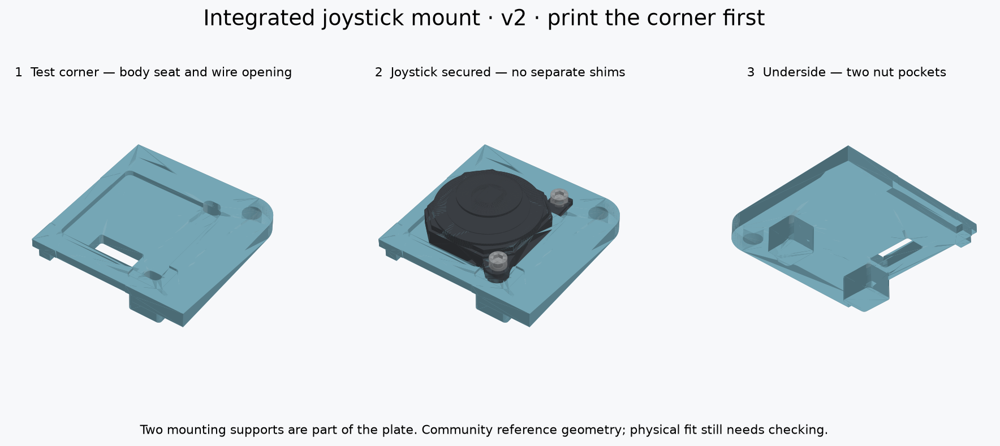

← Codex Micro build guideOne plate. Built-in joystick supports.
The mount is now part of the top plate, with two nuts underneath. The separate stand and loose shims are gone.
Print one small test piece first.This corner is cut from the exact candidate full-plate CAD. Test it before spending filament on the full plate.
Download the one test STL ↓ 
Rendered from the CAD. The reference joystick does not show the exact textured thumb cap; its real travel must be checked.
How it holds the joystick
The body sits in a 1 mm recess. Each mounting tab rests on a built-in seat. Two screws go down through the tabs into metal nuts underneath, holding the body in place. Only the two nut bosses extend below the 3 mm plate; there is no thick stand above it.
The mounting tabs face the outer edge. The four solder pads face the neighboring key row, above a rectangular opening for the wires. This rotates the joystick 180° from the first bench holder.
Print settings
- One piece, 100% scale. Existing PETG, 0.4 mm nozzle, 0.10 mm layers, four walls, 100% infill for the small test.
- Keep the supplied orientation: visible face down; nut bosses pointing up.
- Supports are needed beneath the shallow recess and lower tab seat. Use build-plate supports and check the layer preview. Block supports in the narrow nut tunnels and screw slots; those short tunnel roofs bridge.
- Remove support material from the seats before testing. Keep the wire opening clear.
Same hardware as before
Check it in this order
- Dry-fit the joystick. Unplug the KB2040. With supports removed, place the joystick in the corner without screws. Its mounting ears face the rounded outside corner; its pads sit over the wire opening.
- Check both supports. The body must sit flat and both tabs must touch their seats. No rocking or gaps. Do not tighten screws to pull a tab down.
- Test retention. Slide the two nuts into the underside pockets, then gently tighten the screws from above. Stop if a nut will not fit, a screw bottoms out, or a tab bends.
- Test movement. Move the thumb cap fully in every direction, including diagonals. Nothing should catch, lift or twist.
- Check the case corner. Remove the old top plate and rest this test corner on the bare case ledge. Align the rounded corner and the larger original case-screw hole. It replaces that section; it does not fit inside the old recess. Check the nut bosses clear the case post and wiring.
- Send top and side photos. We will check the result before you print the complete plate.
Files
Detailed instructions and sources · CAD validation · Parametric source
What is verified?Both meshes are closed, connected solids. CAD checks found no collisions with the reference joystick, original case, specified screws/nuts or nominal adjacent keycaps. Physical fit, strength, printed tolerances and full thumb-cap movement are still unverified.
The main site's full-keyboard animation and original assembly STEP still show the old mount. Use this guide for v2.